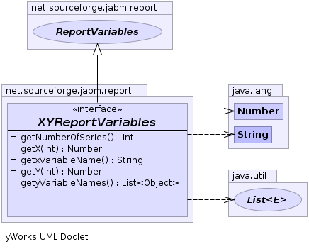

net.sourceforge.jabm.report
Interface XYReportVariables
- All Superinterfaces:
- EventListener, Report, ReportVariables
- All Known Implementing Classes:
- AbstractReportVariables, FitnessReportVariables, PayoffByStrategyReportVariables, RandomVariateReportVariables, StrategyExecutionFrequency, SummaryStatisticsReportVariables, WeightedGraphMetrics
public interface XYReportVariables
- extends ReportVariables
A set of ReportVariables which have one independent variable and several
dependent variables. The independent variable is typically a time-stamp value
and these variables are typically reported in time series form.
-
-

getX
java.lang.Number getX(int seriesIndex)
getY
java.lang.Number getY(int seriesIndex)
- Parameters:
seriesIndex - The index of the dependent variable.
- Returns:
- The value of the dependent variable in the given series.
getNumberOfSeries
int getNumberOfSeries()
- Returns:
- The number of independent variables.
getyVariableNames
java.util.List<java.lang.Object> getyVariableNames()
- Returns:
- The names of the dependent variables.
getxVariableName
java.lang.String getxVariableName()
- Returns:
- The name of the independent variable.